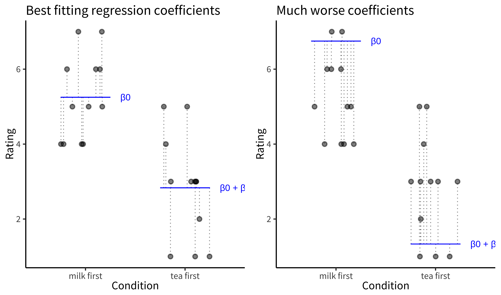
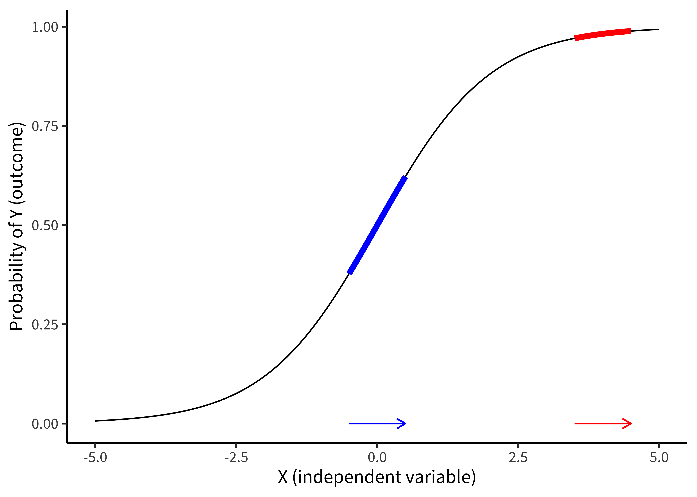
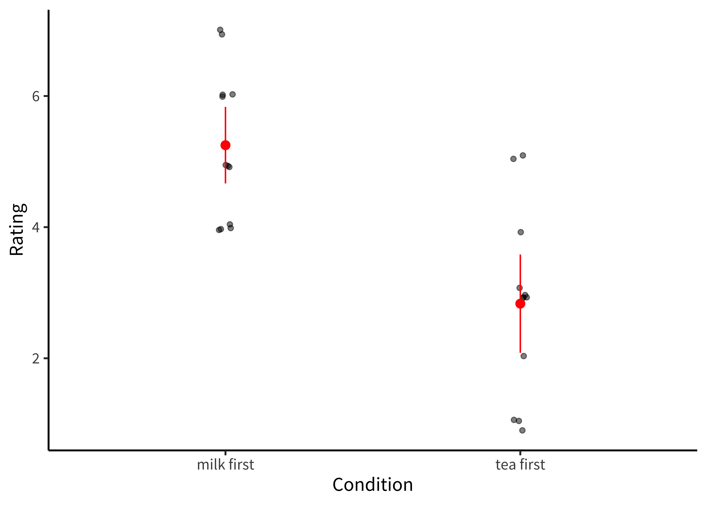
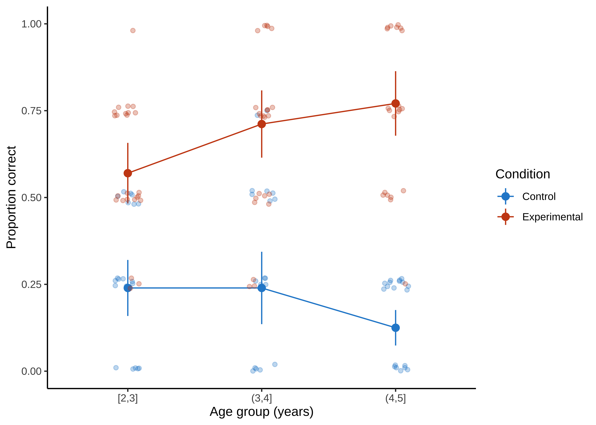
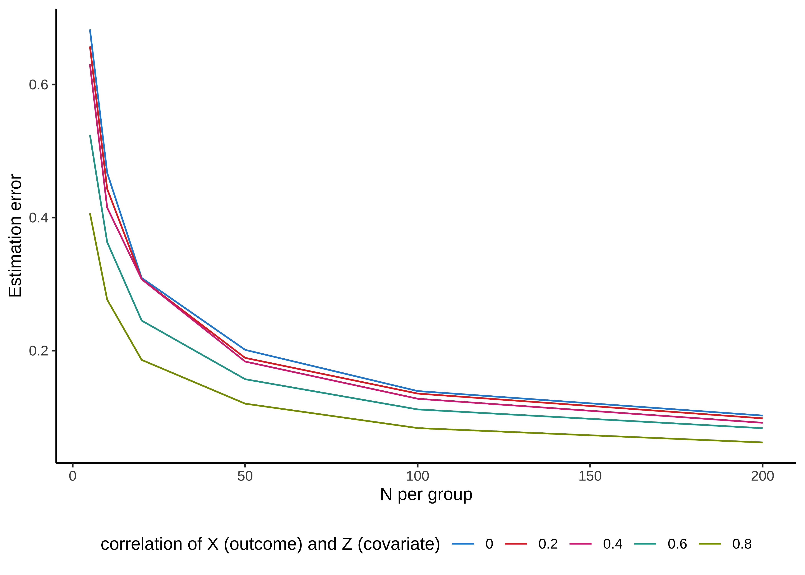

Chapter 7 Models
- Re-conceptualize statistical “tests” as models of data
- Build intuitions about how specific “tests” (e.g., t-tests) relate to more general frameworks (e.g., regression, mixed effects models)
- Identify which models are best suited for which research questions and dependent variables
- Describe what it means to ‘control for’ something
- Explore what kinds of clustered variance are present in common experimental designs
In the previous two chapters, we introduced concepts surrounding estimation of an experimental effect and inference about its relationship to the effect in the population. The tools we introduced there are for fairly specific research questions, and so are limited in their applicability. Once you get beyond the world of two-condition experiments in which each participant contributes one data point from a continuous measure, the simple \(t\)-test is not sufficient.
In some statistics textbooks, the next step would be to present a whole host of other statistical tests that are designed for other special cases. We could even show a decision-tree: What if you have repeated measures? Or categorical data? Or three conditions? But this isn’t a statistics book, and even if it were, we don’t advocate that approach. The idea of finding a specific narrowly-tailored test for your situation is part and parcel of the dichotomous NHST approach that we tried to talk you out of in the last chapter. If all you want is your \(p<.05\), then it makes sense to look up the test that can allow you to compute a \(p\) value in your specific case. But we prefer an approach that is more focused on getting a good estimate of the magnitude of the causal effect – and the relation of that estimate to the population effect.
In this chapter, we begin to explore how to select an appropriate statistical model to make these estimates and obtain inference about them. A statistical model is a way of writing down a set of assumptions about how particular data are generated. Statistical models are the bread and butter tools for estimating particular parameters of interest – like the magnitude of a causal effect associated with an experimental manipulation – and making inferences about their relationship to the population parameter(s).
For example, a simple statistical model might assume that observed datapoints are generated via with the flip of a weighted coin. Then the process of estimation is to assess the most likely weight of the coin given the data. This model can then be used to make inferences about whether the coin’s weight differs from some null model (a fair coin, perhaps).
This example sounds a lot like the kinds of simple inferential tests we talked about in the previous chapter; not very “model-y.” But things get more interesting when there are multiple parameters to be estimated, as in many real-world experiments. In the tea-tasting scenario we’ve belabored over the past two chapters, a real experiment might involve multiple people tasting different types of tea in different orders, all with some cups randomly assigned to be milk-first or tea-first. What we’ll learn to do in this chapter is to make a model of this situation that allows us to reason about the magnitude of the milk-order effect while also estimating variation due to different people, orders, and tea types.
We’ll begin by discussing the ubiquitous framework for building statistical models, linear regression. We will then build connections between regression and the \(t\)-test. This section will discuss how to add covariates to regression models, and when linear regression does and doesn’t work. In the next section, we’ll discuss the generalized linear model, an innovation that allows us to make models of a broader range of data types. We’ll then briefly introduce mixed models, which allow us to model clustering in our datasets (such as clusters of observations from a single individual or single stimulus item). We’ll end with some opinionated practical advice on model building.
7.1 Regression models
There are many types of statistical models, but this chapter will focus primarily on regression, a broad and extremely flexible class of models. A regression model relates a dependent variable to one or more independent variables. Dependent variables are sometimes called outcome variables, and independent variables are sometimes called predictor variables, covariates, or features. We will see that many common statistical estimators (like the sample mean) and methods of inference (like the \(t\)-test) are actually simple regression models. Understanding this point will help you see many statistical methods as special cases of the same underlying framework, rather than as unrelated, ad hoc methods.
7.1.1 Regression for estimating a simple treatment effect
Let’s start with one of these special cases, namely estimating a treatment effect, \(\beta\), in a two-group design. In Chapter 5, we solved this exact challenge for the tea-tasting experiment. We posited a model in which the milk-first ratings were normally distributed with mean \(\theta_{\text{milk-first}} = \theta_{\text{tea-first}} + \beta\) and with standard deviation \(\sigma\).83 Here’s a quick reminder that “model” here is a way of saying “set of assumptions about the data generating procedure.” So saying that some equation is a “model” is the same as saying, we think this is where the data came from. We can “turn the crank” – generate data through the process that’s specified in those equations, e.g., pulling numbers from a normal distribution with mean \(\theta_{\text{milk-first}}\) and standard deviation \(\sigma\). In essence, we’re committing to the idea that this process will give us data that are substantively similar to the ones we have already.
Let’s now write that model as a regression model, that is, as a model that predicts each participant’s tea rating, \(Y_i\), given that participant’s treatment assignment, \(X_i\). \(X_i=0\) represents the control (milk-first) group and \(X_i=1\) represents the treatment (tea-first) group. Here, \(Y_i\) is the dependent variable, and \(X_i\) is the independent variable. The subscripts \(i\) index the participants. To make this concrete, you can see some sample tea-tasting data (N=24 for simplicity) below, with the index \(i\), the condition and its predictor \(X_i\), and the rating \(Y\).
Table 7.1: Example tea tasting data.
| i | condition | X | rating (Y) |
|---|---|---|---|
| 1 | milk first | 0 | 6 |
| 2 | milk first | 0 | 4 |
| 3 | milk first | 0 | 5 |
| 4 | milk first | 0 | 5 |
| 5 | milk first | 0 | 5 |
| 6 | milk first | 0 | 4 |
| 7 | milk first | 0 | 6 |
| 8 | milk first | 0 | 4 |
| 9 | milk first | 0 | 7 |
| 10 | milk first | 0 | 4 |
| 11 | milk first | 0 | 6 |
| 12 | milk first | 0 | 7 |
| 13 | tea first | 1 | 2 |
| 14 | tea first | 1 | 3 |
| 15 | tea first | 1 | 3 |
| 16 | tea first | 1 | 4 |
| 17 | tea first | 1 | 3 |
| 18 | tea first | 1 | 1 |
| 19 | tea first | 1 | 1 |
| 20 | tea first | 1 | 5 |
| 21 | tea first | 1 | 3 |
| 22 | tea first | 1 | 1 |
| 23 | tea first | 1 | 3 |
| 24 | tea first | 1 | 5 |
Let’s write this model more formally as a linear regression of Y on X. Conventionally, regression models are written with “\(\beta\)’’ symbols for all parameters, so we’ll now use \(\beta_0 = \theta_{\text{milk-first}}\) for the mean in the milk-first group and \(\beta_1 = \theta_{\text{tea-first}} - \theta_{\text{milk-first}}\) as the average difference between the tea-first and milk-first groups.
\[\begin{align} \label{eq:ols_ttest} Y_i &= \beta_0 + \beta_1 X_i + \epsilon_i \\ \end{align}\]
The term \(\beta_0 + \beta_1 X_i\) is called the linear predictor, and it describes the expected value of an individual’s tea rating, \(Y_i\), given that participant’s treatment group \(X_i\) (the single independent variable in this model). That is, for a participant in the control group (\(X_i=0\)), the linear predictor is just equal to \(\beta_0\), which is indeed the mean for the control group that we specified above. On the other hand, for a participant in the treatment group, the linear predictor is equal to \(\beta_0 + \beta_1\), which is the mean for the treatment group that we specified. In regression jargon, \(\beta_0\) and \(\beta_1\) are regression coefficients, where \(\beta_1\) represents the association of the independent variable \(X\) with the outcome \(Y\).
The term \(\epsilon_i\) is the error term, referring to random variation of participants’ ratings around the group mean.84 Formally, we’d write \(\epsilon_i \sim N(0, \sigma^2)\). The tilde means “is distributed as”, and what follows is a normal distribution with mean 0 and variance \(\sigma^2\). Note that this is a very specific kind of “error”; it not to “error” due to bias, for example. Instead, you can think of the error terms as capturing the “error” that would be associated with predicting any given participant’s rating based on just the linear predictor. If you predicted a control group participant’s rating as \(\beta_0\), that would be a good guess – but you still expect the participant’s rating to deviate somewhat from \(\beta_0\) due to “error” (i.e., variability across participants beyond what is captured by their treatment groups). In our regression model, the linear predictor and error terms together say that participants’ ratings scatter randomly (in fact, normally) around their group means with standard deviation \(\sigma\). And that is exactly the model we posited in Chapter 5.
Figure 7.1: (left) Best-fitting regression coefficients for the tea-tasting experiment. (right) Much worse coefficients for the same data. Dotted lines: Residuals.
Now we have the model. How do we estimate the regression coefficients \(\beta_0\) and \(\beta_1\)? The usual method is called ordinary least squares (OLS). Here’s the basic idea. For any given regression coefficient estimates \(\widehat{\beta}_0\) and \(\widehat{\beta}_1\), we would obtain different predicted values, \(\widehat{Y}_i = \widehat{\beta}_0 + \widehat{\beta}_1 X_i\) for each participant. Some regression coefficient estimates will yield better predictions than others. OLS estimation is designed to find the values of the regression coefficients that optimize these predictions, meaning that the predictions are as close as possible to participants’ true outcomes, \(Y_i\).85 Specifically, OLS minimizes squared error loss, in the sense that it will choose the regression coefficient estimates whose predictions minimize \(\sum_{i=1}^n \left( Y_i - \widehat{Y}_i\right)^2\), where \(n\) is the sample size. A wonderful thing about OLS is that those optimal regression coefficients (generically termed \(\widehat{\mathbf{\beta}}\)) turn out to have a very simple closed form: \(\widehat{\mathbf{\beta}} = \left( \mathbf{X}'\mathbf{X} \right)^{-1} \mathbf{X}'\mathbf{y}\). We are using more general notation here because there could be multiple independent variables. Therefore, \(\widehat{\mathbf{\beta}}\) is a vector, \(\mathbf{X}\) is a matrix of independent variables for each subject, and \(\mathbf{y}\) is a vector of participants’ outcomes. As more good news, the standard error for \(\widehat{\mathbf{\beta}}\) has a similarly simple closed form.
Figure 7.1 gives a graphical illustration of the tea tasting data for each condition (the dots) along with the model predictions for each condition \(\beta_0\) and \(\beta_0 + \beta_1\) (blue lines). The distance of each point to the predictions (the thing that OLS wants to minimize) is shown by the dotted lines. These distances are sample estimates, called residuals, of the true errors (\(\epsilon_i\)).
The left-hand plot shows the best coefficient values – the ones that move the model’s predictions as close as possible to the data points, in the sense of minimizing the total squared length of the dashed lines. The right-hand plot shows a substantially worse set of coefficient values. The amazing thing about OLS is that it is a simple way to find the best coefficient values for a wide range of useful models.
You’ll notice that we aren’t talking much about \(p\)-values in this chapter. Regression models can be used to produce \(p\)-values for specific coefficients, representing inferences about the likelihood of the observed data under some null hypothesis regarding the coefficients. You can also compute Bayes Factors for specific regression coefficients, or use Bayesian inference to fit these coefficients under some prior expectation about their distribution. We won’t talk much about this, or more generally how to fit the models we describe. As we said, we’re not going to give a full treatment of all the relevant statistical topics. Instead we want to help you begin thinking about making models of your data.
7.1.2 Adding predictors
The regression model we just wrote down is the same thing as the \(t\)-test from Chapter 6. But the beauty of regression modeling is that much more complex estimation problems can also be written as regression models, essentially by extending the model we made above. For example, we might want to add another predictor variable, such as the age of the participant.86 The ability to estimate multiple coefficients at once is a huge strength of regression modeling, so much so that sometimes people use the label multiple regression to denote that there is more than one predictor + coefficient pair.
Let’s add this new independent variable and a corresponding regression coefficient to our model:
\[\begin{align} \label{eq:ols_one_covariate} Y_i &= \beta_0 + \beta_1 X_{i1} + \beta_2 X_{i2} + \epsilon_i \\ \end{align}\]
Now that we have multiple independent variables, we’ve labeled them \(X_{1}\) (treatment group) and \(X_{2}\) (age) for clarity.
To illustrate how to interpret the regression coefficients in this model, let’s use the linear predictor to compare the model’s predicted tea ratings for two hypothetical participants who are both in the treatment group: 20-year-old Alice and 21-year old Bob. Alice’s linear predictor tells us that her expected rating is \(\beta_0 + \beta_1 + \beta_2 \cdot 20\). In contrast, Bob’s linear predictor is \(\beta_0 + \beta_1 + \beta_2 \cdot 21\). We could therefore calculate the expected difference in ratings for 21-year-olds versus 20-year olds by subtracting Alice’s linear predictor from Bob’s, yielding just \(\beta_2\). How simple!
We would get the same result if Alice and Bob were instead 50 and 51 years old, respectively. This equivalence illustrates a key point about linear regression models in general:
The regression coefficient represents the expected difference in outcome when comparing any two participants who differ by 1 unit of the relevant independent variable, and who do not differ on any other independent variables in the model.
Here, the coefficient compares participants who differ by 1 year of age. In “Practical modeling considerations” below, we discuss whether and when to “control for” additional variables (i.e., when to add them to your model).
7.1.3 When does linear regression work?
Linear regression modeling with OLS is an incredibly powerful technique for creating models to estimate the influence of multiple predictors on a single dependent variable. In fact, OLS is in a mathematical sense the best way to fit a linear model!87 There is a precise sense in which OLS gives the very best predictions we could ever get from any model that posits linear relationships between the independent variables and the outcome. That is, you can come up with any other linear model you want, and yet if the assumptions of OLS are fulfilled, predictions from OLS will always be less noisy than those of your model. This is because of an elegant mathematical result called the Gauss-Markov Theorem. But OLS only “works” – in the sense of yielding good estimates – if three big conditions are met.
- The predictor relationships being modeled must be linear. In our comparison of Alice’s and Bob’s expected outcomes based on their 1-year age difference, we were able to interpret the coefficient \(\beta_2\) as the average difference in \(Y_i\) when comparing participants who differ by 1 year of age, regardless of whether those ages are 20 vs. 21 or 50 vs. 51. But that’s not always true: plenty of things vary non-linearly with age – for example, imagine growth in height over age! Linear regression will give bad answers in such cases.88 One way to accommodate non-linearities is to modify the linear predictor to include polynomial terms, such as \(X_2^2\), which then allow us to fit a curve rather than just a straight line. It is always a good idea to use visualizations like scatter plots to look for possible problems with linearity.
- Errors must be independent. In our example, observations in the regression model (i.e., rows in the dataset) were sampled independently: each participant was recruited independently to the study and each performed a single trial. On the other hand, suppose we have repeated-measures data in which we sample participants, and then obtained multiple measurements for each participant. Within each participant, measurements would likely be correlated (perhaps because participants differ on their general level of tea enjoyment). This correlation can invalidate inferences from a model that does not accommodate the correlation. We’ll discuss this problem in detail below.
- Errors must be normal and unrelated to the predictor. Imagine older people have very consistent tea-ordering preferences while younger people do not. In that case, the models’ error term would be less variable for older participants than younger ones. This issue is called heteroskedasticity. It is a good idea to plot each independent variable versus the residuals to see if the residuals are more variable for certain values of the independent variable than for others.
If any of these three conditions are violated, estimates and inferences from your model may be suspect.
7.2 Generalized linear models
So far we have considered continuous outcome measures, like tea ratings. What if we instead had a binary outcome, such as whether a participant liked or didn’t like the tea, or a count outcome, such as the number of cups a participant chose to drink? These and other non-continuous outcomes often violate the assumptions of OLS, in particular because they often induce heteroskedastic errors.
Binary outcomes inherently produce heteroskedastic errors because the variance of a binary variable depends directly on the success probability. Errors will be more variable when the expected success probability is closer to 0.50, and much less variable for when the expected success is probability is closer to 0 or 1.89 Specifically, the variance of a binary variable with success probability \(p\) is simply \(p(1-p)\), which is maximized at \(p=0.50\). This heteroskedasticity in turn means that inferences from the model (e.g., \(p\)-values) can be incorrect; sometimes just a little bit off but sometimes dramatically incorrect.90 There’s a whole school of thought in economics that claims that it’s OK to use linear regression for binary outcomes. One commentator described this as “wrong but super useful” because the coefficients are simple to interpret as probabilities. Our position is that the linear probability model is an approximation that can be useful but should only be deployed with care by researchers who have given some thought to its weaknesses.
Happily, generalized linear models (GLMs) are regression models closely related to OLS that can handle non-continuous outcomes. These models are called “generalized” because OLS is one of many members of this large class of models. To see the connection, let’s first write an OLS model more generally in terms of what it says about the expected value of the outcome, which we notate as \(E[Y_i]\):
\[\begin{align} \label{eq:ols_general_form} E[Y_i] &= \beta_0 + \sum_{j=1}^p \beta_j X_{ij} \end{align}\]
where \(p\) is the number of independent variables, \(\beta_0\) is the intercept, and \(\beta_j\) is the regression coefficient for the \(j^{th}\) independent variable. This equation is just a math-y way of saying that you predict from a regression model by adding up each of the predictors’ contributions to the expected outcome (\(\beta_j X_{ij}\)).
The linear predictor of a GLM (i.e., \(\beta_0 + \sum_{j=1}^p \beta_j X_{ij}\)) looks exactly the same as for OLS, but instead of modeling \(E[Y_i]\), a GLM models some transformation, \(g(.)\), of the expectation:
\[\begin{align} \label{eq:glm_general_form} g( E[Y_i] ) &= \beta_0 + \sum_{j=1}^p \beta_j X_{ij} \end{align}\]
GLMs involve transforming the expectation of the outcome, not the outcome itself!
In GLMs, we are not just taking the outcome variable in our dataset and transforming it before fitting an OLS model, but rather we are fitting a different model entirely, one that posits a fundamentally different relationship between the predictors and the expected outcomes. This transformation is called the link function. In other words, to fit different kinds of outcomes, all we need to do is construct a standard linear model and then just transform its output via the appropriate link function.
Perhaps the most common link function is the logit link, which is suitable for binary data. This link function looks like this, where \(w\) is any probability that is strictly between 0 and 1:
\[g(w) = \log \left( \frac{w}{1 - w} \right)\]
The term \(w / (1 - w)\) is called an odds and represents the probability of an event occurring divided by the probability of its not occurring. The resulting model is called logistic regression and looks like:
\[\begin{align} \label{eq:glm_logistic_regression} \log \left( \frac{ E[Y_i] }{1 - E[Y_i] } \right) &= \beta_0 + \sum_{j=1}^p \beta_j X_{ij} \end{align}\]
Exponentiating the coefficients (i.e., \(e^{\beta}\)) would yield odds ratios, which are the multiplicative increase in the odds of \(Y_i=1\) that is associated with a one-unit increase in the relevant predictor variable.
Figure 7.2: An example of how logistic regression transforms a change in the mean-centered predictor X into a change in the expected outcome Y. The same absolute change in X is associated in a large difference in the probability of the outcome when X is near its mean (blue) vs. a small change in the outcome when X is large (red) or small.
Figure 7.2 shows the way that a logistic regression model transforms a predictor (\(X\)) into an outcome probability that is bounded at 0 and 1. Critically, although the predictor is still linear, the logit link means that the same change in \(X\) can result in a different change in the absolute probability of \(Y\) depending on where you are on the \(X\) scale. In this example, if you are in the middle of the predictor range, a one-unit change in \(X\) results in a 0.24 change in probability (blue). At a higher value, the change is much smaller (0.02). Notice how this is different from the linear regression model above, where the same change in age always resulted in the same change in preference!
We have only scratched the surface of GLMs here. First, there are many different link functions that are suitable for different outcome types. And second, GLMs differ from OLS not only in their link functions, but also in how they handle the error terms. Our broader goal in this chapter is to show you how regression models are models of data. In that context, GLMs use link functions as a way to make models that generate many different times types of outcome data.91 We sometimes think of linear models as a set of tinker toys you can snap together to stack up a set of predictors. In that context, link functions are an extra “attachment” that you can snap onto your linear model to make it generate a different response type.
7.3 Accommodating clustering in our models
Table 7.2: Outcome data \(y\) with indices indicating both participant and stimulus.
| Stimulus1 | Stimulus2 | Stimulus3 | |
|---|---|---|---|
| Participant1 | y1,1 | y1,2 | y1,3 |
| Participant2 | y2,1 | y2,2 | y2,3 |
| Participant3 | y3,1 | y3,2 | y3,3 |
Experimental data often contain multiple measurements for each participant (so-called repeated measures). In addition, as we discussed in our case study, these measurements are often based on a sample of stimulus items (which then each have multiple measures as well). Table 7.2 gives an example of what the outcome data \(y\) might look like in this case. This clustering is problematic for OLS models, because the error terms for each datapoint are not independent.
Non-independence of datapoints may seem at first glance like a small issue, but it can present a deep problem for making inferences. Take the tea-tasting data we looked at above, where we had 24 observations in each condition. If we fit an OLS model, we observe a highly significant tea-first effect. Here is the estimate and confidence interval for that coefficient: \(b = -2.42\), 95% CI \([-3.50, -1.33]\). Based on what we talked about in the previous chapter, it seems like we’d be licensed in rejecting the null hypothesis that this effect is due to sampling variation and interpret this instead as evidence for a generalizable difference in tea preference in our sampled population.
But suppose we told you that all of those 48 total observations (24 in each condition) were from one individual named George. That would change the picture considerably. Now we’d have no idea whether the big effect we observed reflected a difference in the population, but we would have a very good sense of what George’s preference is!92 We discuss the strengths and weaknesses of repeated-measures designs like this in Chapter 9 and the statistical tradeoffs of having many people with a small number of observations vs. a small number of people with many observations in Chapter 10. The confidence intervals and p-values from our OLS model would be wrong now because all of the error terms would be highly correlated – they would all reflect George’s preferences.
7.4 Linear mixed effects models
How can we make models that deal with clustered data? There are a number of widely-used approaches for solving this problem including linear mixed effects models, generalized estimating equations, and clustered standard errors (often used in economics). Here we will illustrate how the problem gets solved in linear mixed models, which are an extension of OLS models that are fast becoming a standard in many areas of psychology (Bates et al., 2014).
7.4.1 Modeling random variation in clusters
In linear mixed effects models, we modify the linear predictor itself to model differences across clusters. Instead of just measuring George’s preferences, suppose we modified the original tea-tasting experiment (without the age covariate) to collect ten ratings from each participant: five milk-first and five tea-first. We define the model the same way as we did before, with some minor differences:
\[ Y_{it} = \beta_0 + \beta_1 X_{it} + \gamma_i + \epsilon_{it} \]
where \(Y_{it}\) is participant \(i\)’s rating in trial \(t\) and \(X_{it}\) is the participant’s assigned treatment in trial \(t\) (i.e., milk-first or tea-first).
If you compare this equation to the OLS equation above, you will notice that we added two things. First, we’ve added subscripts that distinguish trials from participants. But the big one is that we added \(\gamma_i\), a separate intercept value for each participant. We call this a random intercept because it varies across participants (who are randomly selected from the population).93 Formally, we’d notate this random variation by saying that \(\gamma_i \sim N(0, \tau^2)\) – in other words, that participants’ random intercepts are sampled with a normal distribution with standard deviation \(\tau\).
The random intercept means that we have assumed that each participant has their own typical “baseline” tea rating – some participants generally like tea more than others – and these baseline ratings are normally distributed across participants. Thus, ratings are correlated within participants because ratings cluster around each participant’s unique baseline tea rating.
Following the same logic, we could fit random intercepts for different stimulus items (for example, if we used different types of tea for different trials). The addition of these crossed random intercepts of participants and items would begin to address the challenge posed by Clark (1973) in our case study above. We model participants as having normally distributed variation; we can model stimulus variation the same way, with each stimulus item assumed to produce a particular average outcome, with these average outcomes sampled from a normally distributed population.
7.4.2 Random slopes and the challenges of mixed effects models
Linear mixed effects models can be further extended to model clustering of the independent variables’ effects within subjects, not just clustering of average outcomes within subjects. To do so, we can introduce random slopes (\(\delta_i\)) to the model, which are multiplied by the condition variable \(X\) and represent differences across participants in the effect of tea-tasting:
\[Y_i = \beta_0 + \beta_1 X_{it} + \gamma_i + \delta_{i} X_{it} + \epsilon_{it}\] Just like the random intercepts, these random slopes will be assumed to vary, following a normal distribution.94 These random slopes and intercepts can be assumed to be independent or correlated with one another, depending on the modeler’s preference.
This model now describes random variation in both overall how much someone likes tea and how strong their ordering preference is. Both of these likely do vary in the population and so it seems like a good thing to put these in your model. Indeed under some circumstances, adding random slopes is argued to be very important for making appropriate inferences.95 There’s lots of debate in the literature about the best random effect structure for mixed effects models. This is a very tricky and technical subject. In brief, some folks argue for so-called maximal models, in which you include every random effect that is justified by the design (Barr et al., 2013). Here that would mean including random slopes for each participant. The problem is that these models can get very complex, and can be very hard to fit using standard software. We won’t weigh in on this topic, but as you start to use these models on more complex experimental designs, it might be worth reading up.
On the other hand, the model is much more complicated. When we had a simple OLS model above, we had only two parameters to fit (\(\beta_0\) and \(\beta_1\)) but now we have those two plus two more, representing the standard deviations of the individual participant intercepts and slopes. This complexity can lead to problems in fitting the models, especially with very small datasets (where these parameters are not very well-constrained by the data) or very large datasets (where computing all these parameters can be tricky).96 Many R users may be familiar with the widely-used lme4 package for fitting mixed effects models using frequentist tools related to maximum likelihood. Such models can also be fit using Bayesian inference with the brms package, which provides many powerful methods for specifying complex models.
More generally, linear mixed effects models are very flexible, and they have become quite common in psychology. But they do have significant limitations. As we discussed, they can be tricky to fit in standard software packages. Further, the accuracy of these models relies on our ability to specify the structure of the random effects correctly.97 One particularly problematic situation is when the correlation structure of the errors is misspecified, for example if observations within a participant are more correlated for participants in the treatment group than in the control group; in such cases, mixed model estimates can be substantially biased (Bie et al., 2021). If we specify an incorrect model our inferences are wrong, but it is sometimes difficult to know how to check whether your model is reasonable, especially with a small number of clusters or observations.
7.5 How do you use models to analyze data?
In the prior parts of this chapter, we’ve described a suite of regression-based techniques – standard OLS, the generalized linear model, and linear mixed effects models – that can be used to model the data resulting from randomized experiments (as well as many other kinds of data). The advantage of regression models over the simpler estimation and inference methods we described in the prior two chapters is that these models can more effectively take into account a range of different kinds of variation including covariates, multiple manipulations, and clustered structure. Further, when used appropriately to analyze a well-designed randomized experiment, regression models can give an unbiased estimate of a causal effect of interest, our main goal in doing experiments.
But – practically speaking – how should go you about building a model for your experiment? What covariates should you include and what should you leave out? There are many ways to use models to explore datasets, but in this section we will try to sketch a default approach for the use of models to estimate causal effects in experiments in the most straightforward way. Think of this as a starting point. We’ll begin this section by giving a set of rules of thumb, then discuss a worked example. Our final subsections will deal with the issues of when you should include covariates in your model and how to check if your result is robust across multiple different model specifications.
7.5.1 Modeling rules of thumb
Our approach to statistical modeling is to start with a “default model” that is known in the literature as a saturated model. The saturated model of an experiment includes the full design of the experiment – all main effects and interactions – and nothing else. If you are manipulating a variable, include it in your model. If you are manipulating two, include them both and their interaction. If your design includes repeated measurements for participants, include a random effect of participant; if it includes experimental items for which repeated measurements are made, include random effect of stimulus.98 As discussed above, you can also include the “maximal” random effect structure (Barr et al., 2013), which involves random slopes as well as intercepts – but recognize that you cannot always fit such models.
Don’t include lots of other stuff in your default model. You are doing a randomized experiment, and the strength of randomized experiments is that you don’t have to worry about confounding based on the population (see Chapter 1). So don’t put a lot of covariates in your default model – usually don’t put in any!99 One corollary to having this kind of default perspective on data analysis: When you see an analysis that deviates substantially from the default, these deviations should provoke some questions. If someone drops a manipulation from their analysis, adds a covariate or two, or fails to control for some clustering in the data, did they deviate because of different norms in their sub-field, or was there some other rationale? This line of reasoning sometimes leads to questions about the extent to which particular analytic decisions are post-hoc and driven by the data (in other words, \(p\)-hacked).
This default saturated model then represents a simple summary of your experimental results. Its coefficients can be interpreted as estimates of the effects of interest, and it can be used as the basis for inferences about the relation of the experimental effect to the population using either frequentist or Bayesian tools.
Here’s a bit more guidance about this modeling strategy.
- Preregister your model. If you change your analysis approach after you see your data, you risk \(p\)-hacking – choosing an analysis that inflates the estimate of your effect of interest. As we discussed in Chapter 3 and as we will discuss in more detail in Chapter 11, one important strategy for minimizing this problem is to preregister your analysis.100 A side benefit of preregistration is it makes you think through whether your experimental design is appropriate – that is, is there actually an analysis capable of estimating the effect you want from the data you intend to collect?
 Figure 7.3: Raw data, means, and confidence intervals for the tea-tasting experiment.
Visualize the model predictions against the observed data. As we’ll discuss in Chapter 15, the “default model” for an experiment should go alongside a “default visualization” that similarly reflects the full design structure of the experiment and any primary clusters. In visualizing data like those from our tea-tasting experiment, show individual participants’ average ratings (as in Figure 7.3). One way to check whether a model fits your data is then to plot it on top of those data. Sometimes this combination of model and data can be as simple as a scatter plot with a regression line. But seeing the model plotted alongside the data can often reveal a mismatch between the two. A model that does not describe the data very well is not a good source of generalizable inferences!
Interpret the model predictions. Once you have a model, don’t just read off the \(p\)-values for your coefficients of interest. Walk through the each coefficient, considering how it relates to your outcome variable. For a simple two group design like we’ve been considering, the condition coefficient is the estimate of the causal effect that you intended to measure! Consider its sign, its magnitude, and its precision (standard error or confidence interval).
That said, there are many contexts in which it does make sense to depart from the default saturated model. For example, there may be insufficient statistical power to estimate multiple interaction terms, or covariates might be included in the model to help handle certain forms of missing data. Our default model simply represents a good starting point.
7.5.2 A worked example
 Figure 7.4: Example stimulus materials from Stiller et al. (2015).
Figure 7.4: Example stimulus materials from Stiller et al. (2015).
All this advice may seem abstract, so let’s put it into practice on a simple example. For a change, let’s look at an experiment that’s not about tea tasting. Here we’ll consider data from an experiment testing preschool children’s language comprehension [Stiller et al. (2015); we also use these data in Appendix C]. In this experiment, 2–5 year old children saw displays like the one in Figure 7.4. In the experimental condition, a puppet might say, for example, “My friend has glasses! Which one is my friend?” The goal was to measure how many children made the “pragmatic inference” that the puppet’s friend was the face with glasses and no hat.
To estimate the effect, participants were randomly assigned to either the experimental condition or to a control condition in which the puppet had eaten too much peanut butter and couldn’t talk, but they still had to guess which face was his friend. There were also three other types of experimental stimuli (houses, beds, and plates of pasta). Data from this experiment consisted of 588 total observations from 147 children, with all four stimuli presented to each child. The primary hypothesis of this experiment was that that preschool children could make pragmatic inferences by correctly inferring which of the three faces (for example) the puppet was describing.
This experimental design looks a lot like some versions of our tea-tasting experiment. We have one primary condition manipulation (the puppet provides information versus does not), presented between-participants so that some participants are in the experimental condition and others are in the control condition. Our measurements are repeated within participants across different experimental stimuli. Finally, we have one important, pre-planned covariate: children’s age.101 Our sampling plan for this experiment was actually stratified across age, meaning that we intentionally recruited the same number of participants for each one-year age group – because we anticipated that age was highly correlated with children’s ability to succeed in this experiment. We’ll present this kind of sampling in more detail in Chapter 10. Experimental data are plotted in Figure 7.5.
Figure 7.5: Data for Stiller et al. (2015). Each point shows a single participant’s proportion correct trials (out of 4 experimental stimuli) plotted by age group, jittered slightly to avoid overplotting. Larger points and associated confidence intervals show mean and 95% confidence intervals for each condition.
How should we go about making our default model for this dataset?102 This experiment was not preregistered, but the paper includes a separate replication dataset with the same analysis. We simply include each of these design factors in a mixed effects model; we use a logistic link function for our mixed effects model (a generalized linear mixed effects model) because we would like to predict correct performance on each trial, which is a binary variable. So that gives us an effect of condition and age as a covariate. We further add an interaction between condition and age in case the condition effect varies meaningfully across groups. Finally, we add random effects of participant and experimental item.103 As discussed above, this is a tricky decision-point; we could very reasonably have added random slopes as well.
The resulting model looks like this:
\[ \text{logit}(Y_{it}) = \beta_0 + \beta_1 X_{i1} + \beta_2 X_{i2} + \beta_3 X_{i1} X_{i2} + \gamma_i + \delta_t + \epsilon_{it} \]
Let’s break this down left to right:
- \(\text{logit}(Y_{it})\) says that we are predicting a logistic function of \(Y_{it}\) (whether child \(i\) was correct on trial \(t\)).
- \(\beta_0\) is the intercept, our estimate of the average log odds of correct responses for participants in the control condition.
- \(\beta_1 X_{i1}\) is the condition predictor. \(\beta_1\) represents the change in log odds associated with being in the experimental condition (the causal effect of interest!), and \(X_{i1}\) is an indicator variable that is 1 if child \(i\) is in the experimental condition and 0 for the control condition. Multiplying \(\beta_1\) by this indicator means that the predictor has the value 0 for participants in the control condition and \(\beta_1\) for those in the experimental condition.
- \(\beta_2 X_{i2}\) is the age predictor. \(\beta_2\) represents the difference in log-odds associated with one additional year of age, and \(X_{i2}\) is the age for each participant.104 We have centered our age predictor in this example so that all estimates from our model are for the average age of our participants. Centering is a good practice for modeling continuous predictors because it increases the interpretability of other parts of the model. For example, because age is centered in this model, the intercept \(\beta_0\) can be interpreted as the predicted odds of a correct trial for a participant at the average age.
- \(\beta_3 X_{i1} * X_{i2}\) is the interaction between experimental condition and age. \(\beta_3\) represents the difference in log odds (i.e., the log of the odds ratio) that is associated with being one year older and in the experimental condition versus the control condition. This term is multiplied by both each child’s age and the condition indicator \(X_i\).
- \(\gamma_i\) is the random intercept for participant \(i\), capturing individual variation in the odds of success across trials.
- \(\delta_t\) is the random intercept for stimulus \(t\), capturing variation in the odds of success across the four different stimuli.
| Term | \(\hat{\beta}\) | 95% CI | \(z\) | \(p\) |
|---|---|---|---|---|
| Control condition | -1.46 | [-1.88, -1.04] | -6.76 | < .001 |
| Age (years) | -0.38 | [-0.75, -0.01] | -1.99 | .046 |
| Experimental condition | 2.26 | [1.82, 2.70] | 10.07 | < .001 |
| Age (years) * Experimental condition | 0.92 | [0.42, 1.43] | 3.60 | < .001 |
Let’s estimate this model and see how it looks. We’ll focus here on interpretation of the so-called fixed effects (the main predictors), as opposed to the participant and item random effects.105 Participant means are estimated to have a standard deviation of 0.23 (in log odds) while items have a standard deviation of 0.27. These indicate that both of our random effects capture meaningful variation. Table 7.3 shows the coefficients. Again, let’s walk through each.
The control condition estimate (intercept) is \(\hat{\beta} = -1.46\), 95% CI \([-1.88, -1.04]\), \(z = -6.76\), \(p < .001\). This estimate reflects that the log odds of a correct response for an average-age participant in the control condition is -1.46, which corresponds to a probability of 0.19. If we look at Figure 7.5, that estimate makes sense: 0.19 seems close to the average for the control condition.
The age effect estimate is \(\hat{\beta} = -0.38\), 95% CI \([-0.75, -0.01]\), \(z = -1.99\), \(p = .046\). There is a slight decrease in the log-odds of a correct response for older children in the control condition. Again, looking at Figure 7.5, this estimate is interpretable: we see a small decline in the probability of a correct response for the oldest age group.
The key experimental condition estimate then is \(\hat{\beta} = 2.26\), 95% CI \([1.82, 2.70]\), \(z = 10.07\), \(p < .001\). This estimate means that the log odds of a correct response for an average-age participant in the experimental condition is the sum of the estimates for the control (intercept) and the experimental conditions: -1.46 + 2.26, which corresponds to a probability of 0.69. Again, grounding our interpretation in Figure 7.5, this estimate corresponds to the average value for the experimental condition.
Finally, the interaction of age and condition is \(\hat{\beta} = 0.92\), 95% CI \([0.42, 1.43]\), \(z = 3.60\), \(p < .001\). This positive coefficient reflects that with every year of age, the difference between control and experimental conditions grows.
In sum, this model suggests that there was a substantial difference in performance between experimental and control conditions, in turn supporting the hypothesis that children in the sampled age group can perform pragmatic inferences.
This example illustrates the “default saturated model” framework that we recommend – the idea that a single regression model corresponding to the design of the experiment can yield an interpretable estimate of the causal effect of interest, even in the presence of several other sources of variation.
7.5.3 When does it makes sense to include covariates in a model?
Let’s come back to one piece of advice that we gave above about making a “default” model of an experiment: not including covariates. This advice can seem surprising. Many demographic factors are of interest to psychologists and other behavioral scientists, and in observational studies these factors will almost always be related to important life outcomes. So why not put them into our experimental models? After all, we did include age in our worked example above!
Well, if you have one or at most a small handful of covariates that you believe are meaningfully related to the outcome, you can plan in advance to put them in your model. If you think that your effect is likely to be moderated a specific demographic characteristic – as we did with age and pragmatic inference in our example above – then this inclusion can be quite useful.
Further, including covariates can increase the precision of your estimates by reducing “noise” in your outcome, and if you hypothesize that they interact. What’s surprising though is how little this adjustment does to increase your overall precision unless the correlation between covariate and outcome is very strong. Figure 7.6 shows this relationship in a simple simulation. Only when the correlation between covariate and outcome (e.g., age and tea rating) is greater than .6 – .8 does this adjustment really help.106 A relationship that strong is very unusual for most experiments in psychology, not least because our outcome measures are very unlikely to even be reliable enough to correlate with themselves at \(r > .8\) let alone with another variable; see Chapter 8 for more details on this point.
Figure 7.6: Decreases in estimation error due to adjusting for covariates, plotted by the N participants in each group and the correlation between the covariate and the outcome.
That said, there are quite a few reasons not to include covariates – motivating our recommendation to skip them in your default model unless you have very strong expectations for either A) a correlation with the outcome or B) a strong moderation relationship.
The first reason is simply because we don’t need to. Because randomization cuts causal links, our experimental estimate is an unbiased estimate of the causal effect of interest (at least for large samples). We are guaranteed that, in the limit of many different experiments, even though people with different ages will be in the different tea tasting conditions, this source of variation will be averaged out.
The second reason is that, on average, including more covariates into models actually (slightly) decreases the probability that the model can detect a true effect (that is, it decreases statistical precision and power). Just by chance covariates can “soak up” variation in the outcome, leaving less to be accounted for by the true effect!
The third reason is that you can actually compromise your causal inference by including some covariates, particularly those that are collected after randomization. The logic of randomization is that you cut all causal links between features of the sample and the condition manipulation. But you can “uncut” these links by accident by adding variables into your model that are related to group status. This problem is generically called conditioning on post-treatment variables and a full discussion of is out of the scope of this book, but it’s something to avoid [and read up on if you’re worried about it; Montgomery et al. (2018)].
Finally, one of the standard justifications for controlling is actually ill-founded as well: adding covariates because your groups are unbalanced. People often talk about “unhappy randomization”: you randomize to the different tea-tasting groups, for example, but then it turns out the mean age is a bit different between groups. Then you do a t-test or some other statistical test and find out that you actually have a significant age difference.107 Incidentally, this practice makes no sense: because you randomized, you know that the difference in ages occurred by chance, so why are you using a t-test to test if the variation is due to chance? But incidental demographic differences between groups are unlikely to be important unless that characteristic is highly correlated with the outcome (see above). Instead, if the sample size is small enough that meaningfully large incidental differences could arise in important confounders, then it is preferable to stratify randomization on that confounder at the outset (and then also to include that covariate in modeling).
So these are are options: if a covariate is known to be very strongly related to our outcome, we can include it in our default model. Otherwise, we avoid a lot of trouble by leaving covariates out.
7.5.4 Robustness checks and the multiverse
On the standard statistical testing approach that has been common in the psychology literature, even a simple two factor experimental design affords a host of different \(t\)-tests and ANOVAs,108 Although we don’t cover this point here, ANOVAs are also a special case of regression. offering many opportunities for \(p\)-hacking and selective reporting. We’ve been advocating here instead for a “default model” approach in which you pre-plan and pre-register a single regression model that captures the planned features of your experimental design including manipulations and sources of clustering. This approach can help you to navigate some of the complexity of data analysis by having a standard approach that you take in almost every case.
Not every dataset will be amenable to this approach, however. For complex experimental designs or unusual measures, sometimes it can be hard to figure out how to specify or fit the default saturated model. And especially in these cases, the choice of model can make a big difference to the magnitude of the reported effect. To quantify variability in effect size due to model choice, “Many Analysts” projects have asked a set of teams to approach a dataset using different analysis methods. The consistent result from these projects has been that there is substantial variability in outcomes depending on what approach is taken (Botvinik-Nezer et al., 2020; Silberzahn et al., 2018).
Robustness analysis (also sometimes called “sensitivity analysis” or “multiverse analysis”, which sounds cool) is a technique for addressing the possibility that an individual analysis over- or under-estimates a particular effect by chance (Steegen et al., 2016). The general idea is that analysts explore a space of different possible analyses. In its simplest form, alternative models can be reported in a supplement; more sophisticated versions of the idea call for averaging estimates across a range of possible specifications and reporting this average as the primary effect estimate. The details of this kind of analysis will vary depending on what you are worried about your model being sensitive to. One analyst might be concerned about the effects of adding different covariates; another might be using a Bayesian framework and be concerned about sensitivity to particular prior values. The primary principle to take home is a bit of humility about our models. Any given model is likely wrong. Investigating the sensitivity of your estimates to the details of your model specification is a good idea.
7.6 Chapter summary: Models
In the last three chapters, we have spelled out a framework for data analysis that focuses on the key experimental goal: a measurement of a particular causal effect. We began with basic techniques for estimating effects and making inferences about how these effects estimated from a sample can be generalized to a population. This chapter showed how these ideas naturally give rise to the idea of making models of data, which allow estimation of effects in more complex designs. Simple regression models, which are formally identical to other inference methods in the most basic case, can be extended with the generalized linear model as well as with mixed effects models. Finally, we ended with some guidance on how to build a “default model” – an (often pre-registered) regression model that maps onto your experimental design and provides the primary estimate of your key causal effect.
📚 Suggested readings:
- Gelman, A., Hill, J., & Vehtari, A. (2020). Regression and other stories. Cambridge University Press. – This book provides an opinionated practical guide to regression modeling and data description.
- McElreath, R. (2020). Statistical rethinking: A Bayesian course with examples in R and Stan. Chapman and Hall/CRC. – McElreath’s textbook is a more in-depth introduction to the process of developing Bayesian models of data that allow for estimation and inference in complex datasets.